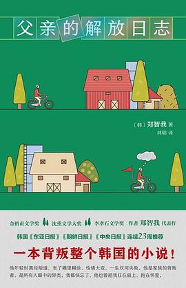

父亲的解放日志

总体观点
《父亲的解放日志》（아버지의 해방일지）是韩国当代著名作家郑智我于2022年出版的现象级长篇小说，斩获金裕贞文学奖等多项殊荣，在韩国引发了数十万人参与阅读与共情的社会风暴。作品以作者自身作为‘赤色分子后代’的成长创伤为自传蓝本，却极其罕见地摒弃了同类题材惯用的悲情控诉与控诉苦难叙事，代之以无比松弛、荒诞且充满全罗道方言活力的黑色幽默笔调。
小说以七十多岁的前游击队员父亲在高丽参田旁骑自行车撞电线杆猝死开篇，聚焦灵堂停尸的三天三夜。女儿雅利自幼因父亲的‘红色前科’在连坐制阴影下受尽歧视与牵连，一生都在试图逃离这个顽固相信‘人民公社与唯物主义’的失败者；然而，在络绎不绝前来吊唁的旧日战友、死对头警察、越南老兵乃至同村欠债小偷的醉话与哭诉中，父亲生前用全部善良、憨傻与固执默默庇护乡邻的动人切片被逐一拼凑出来。郑智我通过这场热气腾腾的葬礼，将冷战历史在微小个体生命中留下的深重创伤彻底消解为博大深沉的父女和解，完成了一场关乎‘解放’的精神成人礼。
核心观点
-
1. 以轻御重：黑色幽默化解沉重历史创伤
面对分断体制与连坐制带来的毕生苦难，用自嘲与喜剧笔调解构沉重宏大叙事，反而释放出更震撼人心的力量。
开篇第一句‘父亲死了，因为撞上电线杆跌破了头’，以毫不煽情的荒诞口吻瞬间打破了烈士或罪犯的脸谱化标签。 -
2. 唯物主义的日常化实践：朴素到近乎愚蠢的人性善意
父亲一生坚守的宏大意识形态，在乡村柴米油盐中蜕变成了毫无保留借钱给穷人、善待所有弱者的赤子之心。
父亲哪怕自己穷得揭不开锅，只要听说邻居家孩子没学费，就会立刻把刚卖了黄牛换来的全部钞票塞给对方。 -
3. 葬礼作为微型社会全景剧场与和解空间
灵堂上的烧酒与干明太鱼汤打破了政治立场的森严壁垒，曾经在战场上拼死相杀的仇敌在此达成凡俗和解。
曾抓捕拷打过父亲的刑警与右翼退伍老兵醉醺醺地跪在灵前痛哭，感念当年自己落难时唯有这位‘赤色分子’施以援手。 -
4. 连坐制受害者代际创伤的理解与超越
子女对问题父母的怨恨往往源于对其人生真实遭遇的无知，唯有穿透标签看见完整的人，才能获得真正的精神松绑。
雅利终于明白父亲一生看似可笑的执拗，不过是一个被时代碾碎尊严的老人企图证明自己未曾虚掷一生的最后倔强。 -
5. 死亡即解放：个体对时代锁链的最终挣脱
生命终结不仅是对肉体衰竭的告别，更是卸下历史包袱、在众人的爱与理解中重获自由的终极解放仪式。
在送葬出殡的唢呐声中，女儿目送灵车驶向青山绿水，心中默念：父亲终于从游击队、监狱与时代牢笼中彻底解放了。
全书结构
-
父亲的荒唐死讯与红二代女儿的冷眼
交代父亲撞电线杆猝死的黑色开场，女儿雅利赶回求礼郡灵堂，回忆自幼被连坐制阴影笼罩的痛苦童年。
雅利在灵堂前烦躁地计算丧葬费用，看着冷柜里父亲灰白的遗容，脑海中浮现出父亲生前总挂在嘴边的唯物主义口号。 -
灵堂初夜：奇奇怪怪的红色老战友
当年智异山游击队幸存的一群老弱病残陆续赶来守灵，喝着浊米酒回忆在雪山林海中啃草根打游击的惨烈往事。
缺了耳朵的老战友捧着酒杯号啕大哭，诉说当年雪崩绝境中父亲如何冒着机枪扫射将奄奄一息的伤员一个个背下山崖。 -
宿敌相聚：右翼老兵与警察的惊人悼词
曾监视甚至逮捕父亲的前情报刑警与极右翼村民登门吊唁，揭开父亲出狱后数十年来如何以德报怨救济仇人家庭。
右翼老兵拉着雅利的手哽咽：‘你父亲是真正的共产党，可也是我这辈子见过最干净、最菩萨心肠的好人啊！’ -
少女的证言：一个笨拙老父亲的隐秘温情
一位叛逆翘家少女来到灵堂致谢，讲述自己遭家暴流落街头时，这位古怪的老爷爷如何像父亲一样收留照顾她。
少女从怀里掏出父亲买给她的廉价发卡，雅利震惊地发现父亲在自己看不见的地方，一直在以笨拙的方式传递着父爱。 -
青山出殡：穿透历史烟云的终极和解与解放
三天守灵结束，全村男女老少汇聚送葬，雅利捧着父亲遗像走在山间林道上，心中坚冰消融，迎来了彼此的真正解放。
棺木缓缓沉入智异山脚下的红土，漫山遍野秋叶飘落，雅利轻声呼唤‘爸爸，一路走好’，泪水模糊了灿烂阳光。